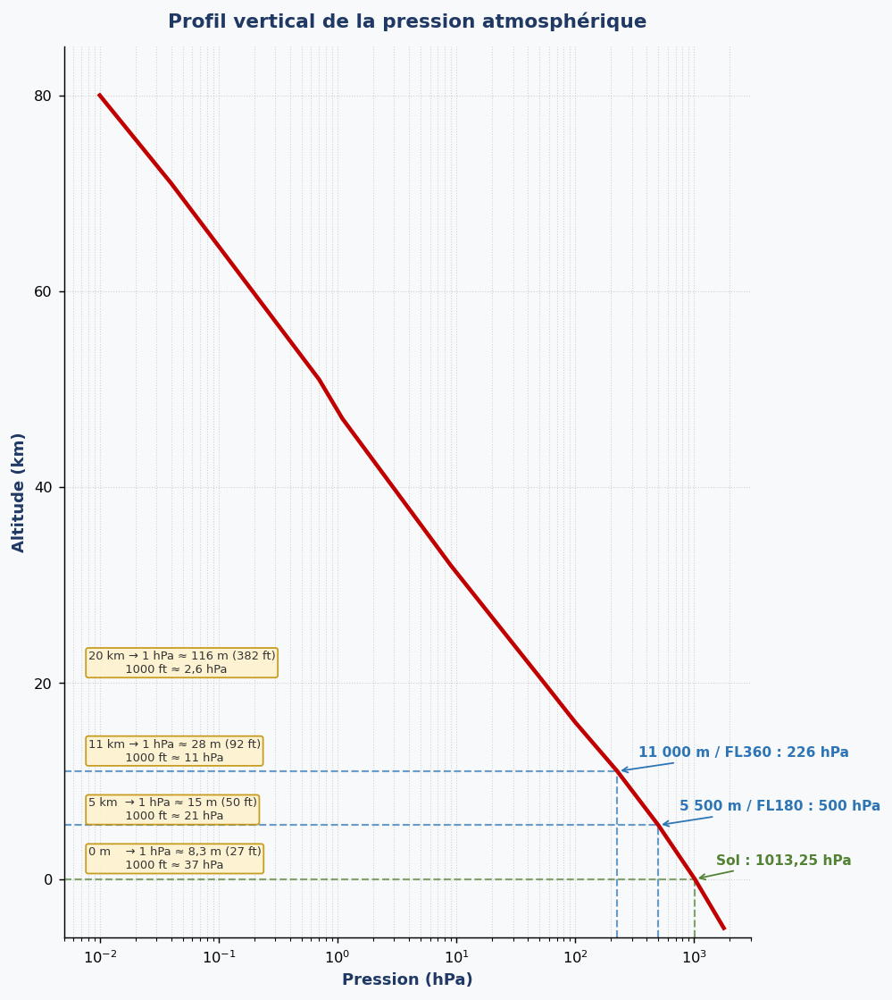
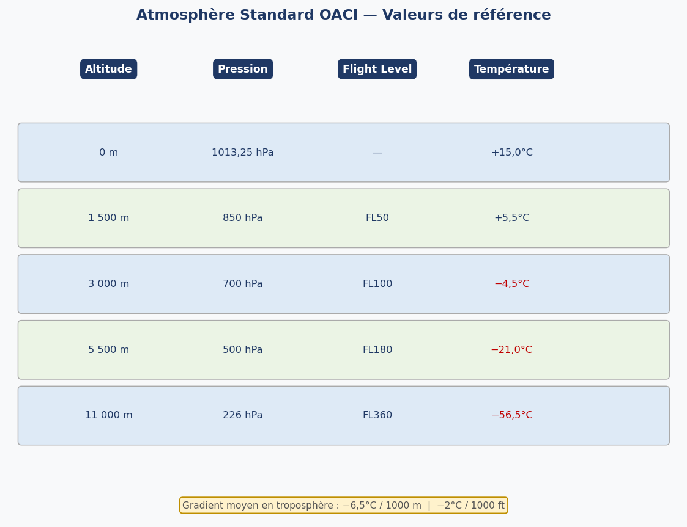
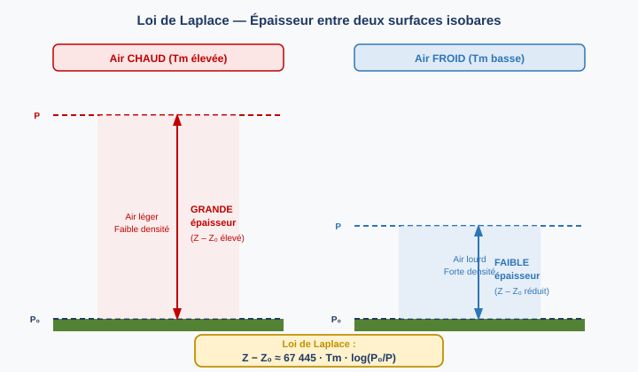
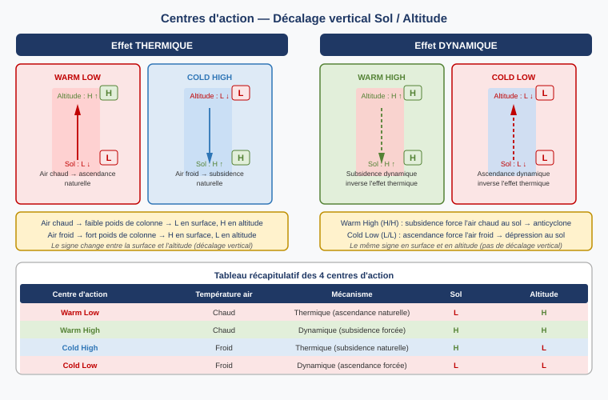
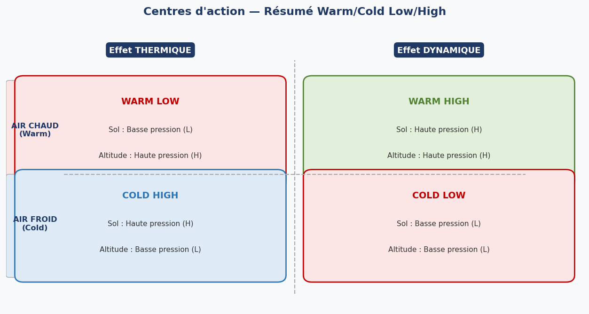

1. Définition et unités de la pression
1.1 Définition générale
La pression est définie comme la force exercée par unité de surface. Dans un fluide au repos, cette force est exercée de manière uniforme dans toutes les directions (loi de Pascal).
Avec F = force appliquée (Newton), S = surface (m²) → l'unité SI est le Pascal (Pa) : 1 Pa = 1 N/m²
1.2 Pression atmosphérique
La pression atmosphérique est une pression statique. Elle correspond au poids d'une colonne d'air s'étendant depuis le point de mesure jusqu'à la limite supérieure de l'atmosphère, divisé par la surface unitaire sur laquelle s'exerce ce poids. Le poids de cette colonne s'exerce de manière uniforme dans toutes les directions.
1.3 Mesure et unités
La mesure de la pression atmosphérique remonte à l'expérience de Torricelli (1647) : un tube de mercure retourné dans un bac ouvert — le poids de la colonne de mercure contrebalance exactement le poids de la colonne d'air au-dessus du bac. Si la pression atmosphérique varie, la hauteur de mercure varie proportionnellement.

La formule fondamentale du baromètre à mercure est :
Avec ρ = masse volumique du liquide (kg/m³), h = hauteur de la colonne (m), g = accélération gravitationnelle (9,80665 m/s²)
Rappel : 1 in = 2,54 cm
1.4 Types d'instruments de mesure
Trois types principaux d'instruments sont utilisés pour mesurer la pression atmosphérique :
- Baromètre à mercure : instrument de référence historique, précis mais fragile et encombrant.
- Barographe : baromètre enregistreur (capsule anéroïde + papier millimétré sur tambour rotatif), permet de suivre l'évolution de la pression dans le temps.
- Baromètre numérique à capteur capacitif silicium : capteur moderne, léger, embarquable. Très répandu en météorologie automatisée.
Le baromètre anéroïde (holostérique) et l'altimètre fonctionnent avec le même capteur : la capsule Vidie — capsule métallique vide et compensée qui se déforme proportionnellement à la pression environnante. La déformation mécanique est ensuite amplifiée et traduite soit en pression (baromètre), soit en altitude (altimètre).
2. Pression de surface — QFE et QFF
2.1 QFE et QFF : deux valeurs pour un même lieu
En un point donné, il existe deux valeurs distinctes pour la pression de surface :
- QFE (station pressure) : pression mesurée directement à la station. C'est la seule valeur réellement mesurée. Elle ne peut pas être comparée directement avec la pression d'une station à une altitude différente.
- QFF (Mean Sea Level Pressure / MSLP) : pression ramenée au niveau moyen de la mer. Pour l'obtenir, on ajoute au QFE la pression d'une colonne d'air fictive allant du sol jusqu'au niveau de la mer, en tenant compte des conditions réelles de température et d'humidité. Le QFF permet de comparer les pressions entre stations d'altitude différente.
2.2 Variations de la pression en surface
Au niveau de la mer, la pression se situe généralement entre 950 hPa et 1050 hPa. Quelques records à retenir :
- Maximum mondial : 1083,5 hPa à Agata (Sibérie), hiver 1968
- Record de Paris : ~1050 hPa
- Minimum mondial : 867 hPa dans l'œil du typhon TIP en 1979
- Record européen bas : ~947 hPa à Boulogne-sur-Mer
La pression en surface (P = ρ·h·g) peut varier sous l'effet de quatre facteurs :
- Variations du champ gravitationnel (marées atmosphériques)
- Variations de la densité moyenne de l'air (liées à la température)
- Mouvements verticaux (composante dynamique : ascendance ou subsidence)
- Advections et déplacements horizontaux de masses d'air
Selon les phénomènes météorologiques, les variations de pression observées en un point sont caractéristiques :
- Perturbations extratropicales : quelques dizaines de hPa, sur 24 à 48 h
- Averses / orages : quelques hPa, sur ~1 h (variation rapide et localisée)
- Cyclones : plusieurs dizaines de hPa, sur ~12 h dans l'œil
3. Représentation isobarique en surface
3.1 Définition des isobares
La pression au niveau de la mer n'est pas uniforme horizontalement. On la représente à l'aide de cartes d'isobares. Une isobare est une ligne reliant des points ayant la même pression atmosphérique à une altitude donnée. Sur les cartes de surface, les isobares relient des points ayant le même QFF (pression au NMM).
- Anticyclone (A / H) : zone de hautes pressions fermées
- Dépression (D / L) : zone de basses pressions fermées
- Dorsale (Ridge) : extension d'un anticyclone
- Thalweg (Trough) : extension d'une dépression
- Col (Col) : zone de pression intermédiaire entre deux anticyclones et deux dépressions
- Marais barométrique (Low pressure pattern) : faible gradient de pression, sans structure organisée
4. Variations verticales de la pression
4.1 Loi hydrostatique fondamentale
Dans un fluide, la pression diminue quand l'altitude augmente. Pour un fluide de masse volumique ρ, on a :
Avec dP = variation de pression (Pa), ρ = masse volumique de l'air (kg/m³), g = 9,80665 m/s², dZ = variation d'altitude (m). Le signe négatif traduit la décroissance de pression avec l'altitude.
4.2 L'atmosphère est un fluide compressible
L'atmosphère est un mélange gazeux, donc un fluide compressible : la masse volumique ρ n'est pas constante, elle diminue avec l'altitude. Cela rend la variation de pression non linéaire : la courbe pression/altitude est logarithmique.
- À basse altitude (haute pression) : la pression varie rapidement avec l'altitude → 1 hPa ≈ 8,3 m à la surface
- À haute altitude (basse pression) : la pression varie lentement → 1 hPa ≈ 116 m à 20 000 m

Repères utiles : FL180 (≈5 500 m) = 500 hPa = P(sol)/2 ; FL360 (≈11 000 m) = 226 hPa ; FL650 (≈20 000 m) = P(sol)/20
4.3 Répartition de la masse atmosphérique
La majorité de la masse de l'atmosphère est concentrée dans les basses couches :
- 5 500 m → 50 % de la masse atmosphérique en-dessous
- 11 000 m → 75 % de la masse atmosphérique en-dessous
- 16 000 m → 90 % de la masse atmosphérique en-dessous
- 30 000 m → 99 % de la masse atmosphérique en-dessous
La densité à la surface vaut environ 1,2 kg/m³. À FL220, la densité est divisée par 2 ; à FL400, par 4.
4.4 Atmosphère standard OACI
L'atmosphère standard OACI (ISA — International Standard Atmosphere) définit des conditions de référence permettant d'étalonner les instruments de bord. Elle suppose une troposphère avec un gradient de température constant de −6,5°C/1 000 m.

5. Loi de Laplace et mètre géopotentiel
5.1 Loi de Laplace
En combinant la loi hydrostatique (dP = −ρ·g·dZ) et la loi des gaz parfaits pour l'air sec (P = ρ·Rₐ·T), on obtient la loi de Laplace, qui relie l'épaisseur d'une couche atmosphérique à sa température moyenne :
Avec Z = altitude de la surface isobare supérieure (m), Z₀ = altitude de la surface isobare inférieure (m), Tm = température moyenne de la couche (K), P₀ = pression à Z₀ (hPa), P = pression à Z (hPa)
La conséquence directe est que l'épaisseur (thickness) entre deux surfaces isobares est directement proportionnelle à la température moyenne de la couche :
- Air chaud → grande épaisseur → les surfaces isobares sont plus élevées en altitude
- Air froid → faible épaisseur → les surfaces isobares sont plus basses en altitude

5.2 Le mètre géopotentiel (mgp)
L'accélération gravitationnelle g n'est pas strictement constante : elle varie légèrement selon la latitude et l'altitude. Pour harmoniser les mesures, on utilise le mètre géopotentiel (mgp).
La relation est : g·dz = 9,8·dZ, soit 1 mgp ≈ 1,02 m géométrique (la différence est négligeable en pratique pour les altitudes de vol commercial). Les cartes de haute altitude donnent les altitudes des surfaces isobares en décamètres géopotentiels (dam).
5.3 Flight Level indiqué vs altitude réelle
L'altimètre calé sur 1013,25 hPa (QNE) indique un Flight Level (FL), qui est une altitude de pression, pas une altitude géométrique. Selon la température réelle de l'air par rapport à l'ISA :
- En air plus chaud que l'ISA : l'altitude réelle est supérieure à l'altitude indiquée (l'avion est plus haut qu'annoncé)
- En air plus froid que l'ISA : l'altitude réelle est inférieure à l'altitude indiquée (l'avion est plus bas qu'annoncé — risque de percussion de relief)
6. Pression en altitude — Représentation par isohypses
6.1 Définition des isohypses
En haute atmosphère, on ne peut pas raisonner en pression à altitude fixe (l'air est trop variable). On travaille plutôt à pression fixe (sur une surface isobare) et on représente la variation d'altitude de cette surface. Une isohypse (ou contour height) est une ligne reliant les points d'une surface isobare qui se trouvent à la même altitude géopotentielle.
- Isobares : utilisées en surface — lignes de même pression à une altitude fixe (NMM)
- Isohypses : utilisées en altitude — lignes de même altitude sur une surface de pression fixe (ex : 500 hPa)
- Au voisinage d'un niveau donné, les deux représentations sont liées : une isohypse élevée correspond à une haute pression locale, une isohypse basse à une basse pression locale.
6.2 Cartes de haute altitude (contour charts)
La topographie d'une surface isobare (ex : 500 hPa) est représentée sur des cartes par des isohypses, de la même façon que le relief est représenté sur une carte topographique. On retrouve les mêmes structures que sur les cartes de surface :
- Hauts géopotentiels (H) : zones où la surface isobare est plus haute → anticyclones d'altitude
- Bas géopotentiels (L) : zones où la surface isobare est plus basse → dépressions d'altitude
- Dorsales (Ridges) : extensions des hauts géopotentiels
- Thalwegs (Troughs) : extensions des bas géopotentiels
Une carte de contour est définie par sa pression de référence (ex : 500 hPa) ou par son FL équivalent (FL180 pour 500 hPa). La valeur "556" sur une carte 500 hPa signifie 5 560 mgp.
7. Centres d'action — Thermiques et dynamiques
Les écarts de pression entre zones géographiques créent des forces de gradient de pression qui mettent l'atmosphère en mouvement. Les centres d'action (anticyclones et dépressions) ont un rôle majeur sur les conditions météorologiques des régions environnantes.
7.1 Centres d'action thermiques
Lorsque l'effet thermique domine (pas de mouvement vertical forcé) :
Warm Low (dépression thermique, air chaud) : en air chaud, la colonne d'air est légère (faible densité). En surface, le poids de la colonne est inférieur → pression basse (L). L'air monte naturellement et renforce l'effet. En altitude, la couche est plus épaisse (loi de Laplace) → pression plus élevée (H). Résultat : L en surface, H en altitude.
Cold High (anticyclone thermique, air froid) : en air froid, la colonne est lourde (forte densité). En surface, pression élevée (H). L'air descend et renforce. En altitude, couche plus mince → pression plus basse (L). Résultat : H en surface, L en altitude.
7.2 Centres d'action dynamiques
Lorsque des mouvements verticaux forcés dominent l'effet thermique :
Warm High (anticyclone dynamique, air chaud) : en air chaud, l'air est forcé à descendre par convergence d'altitude. La subsidence crée une haute pression en surface malgré la légèreté de l'air. En altitude, l'air chaud donne toujours H. Résultat : H en surface, H en altitude.
Cold Low (dépression dynamique, air froid) : en air froid, l'air est forcé à monter par divergence d'altitude. L'ascendance forcée crée une basse pression en surface malgré la lourdeur de l'air. En altitude, l'air froid donne toujours L. Résultat : L en surface, L en altitude.

